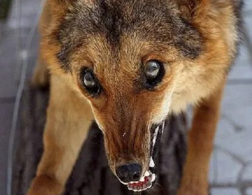
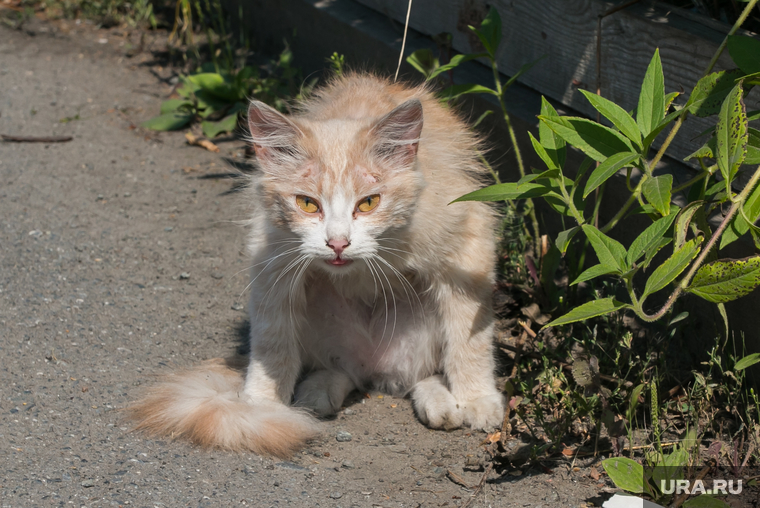
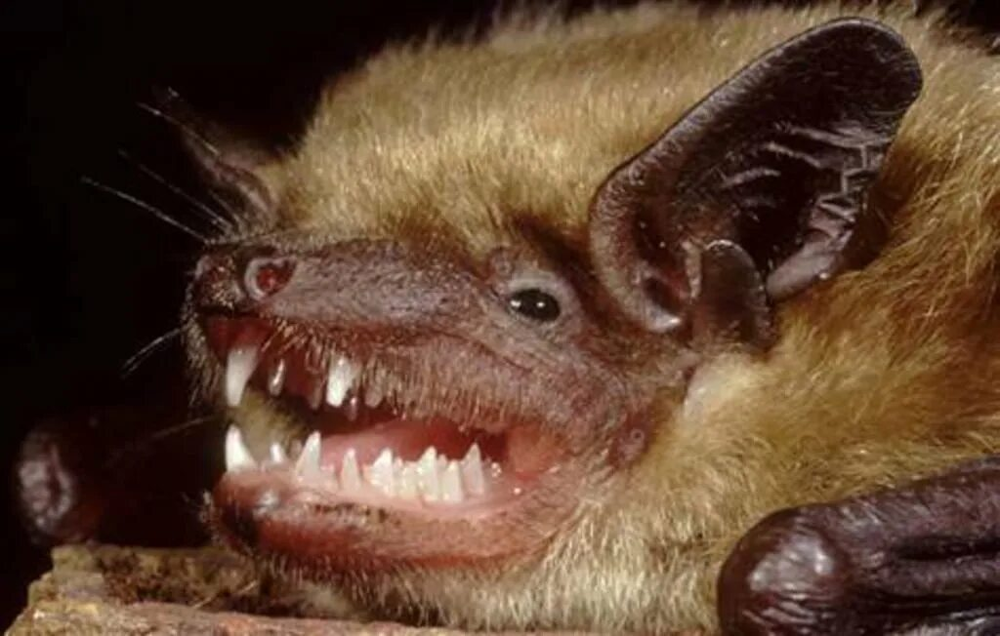
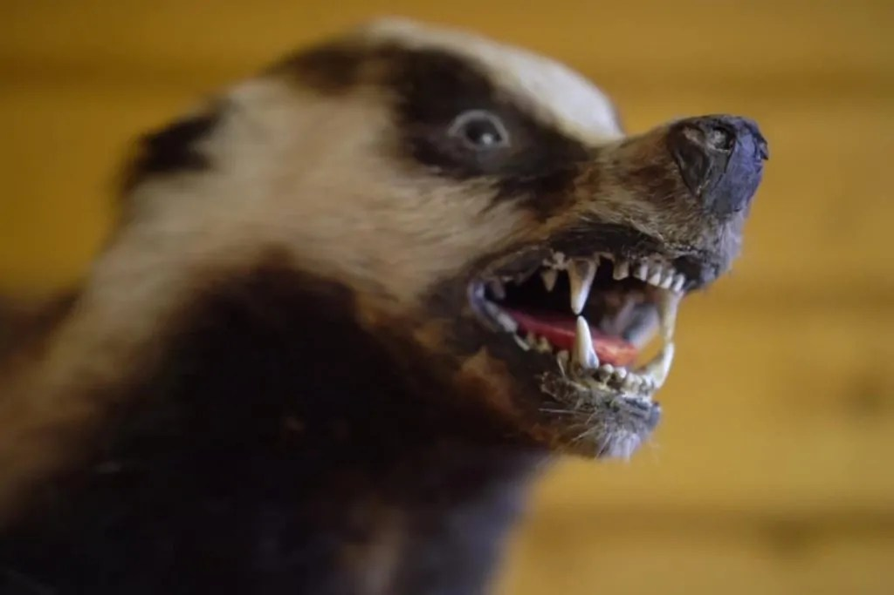

🦠 Бешенство
Полный гид: что это, переносчики, первая помощь и что делать в Таганроге
📌 Что такое бешенство?
Бешенство — смертельное вирусное заболевание, поражающее центральную нервную систему. Передаётся через слюну заражённого животного, чаще при укусе или ослюнении повреждённой кожи. После появления симптомов летальность почти 100%. Единственный шанс — своевременная вакцинация после контакта.
🦠 Способы передачи
- Укус заражённого животного (основной путь).
- Ослюнение — попадание слюны на слизистые (глаза, рот) или на повреждённую кожу (ссадины, царапины).
- Царапины от когтей, загрязнённых слюной (реже).
- Воздушно-капельным или бытовым путём не передаётся.
🐾 Основные переносчики
Заболевание могут переносить любые теплокровные животные. Чаще всего источником становятся:

Слюнотечение, потеря страха, агрессия

Дезориентация, шаткая походка

Обильное слюнотечение, агрессия/апатия

Необычное поведение, слюнотечение

Дневная активность, падение на землю

Потеря страха, агрессия
Признаки бешенства у животных: неестественное поведение (дикое животное выходит к людям), обильное слюноотделение, шаткая походка, агрессия или апатия, паралич.
⚠️ Что делать сразу после укуса или ослюнения
📍 Что делать в Таганроге
🏥 Куда обращаться за помощью
В Таганроге экстренную помощь при укусах оказывают в нескольких учреждениях. Ниже — актуальные адреса и контакты.
📍 Большой проспект, 16
📞 8 (8634) 64-26-52
🚌 Как добраться: автобусы №2, 5, 5/7т, 11, 79; трамваи №5, 6. Остановка «БСМП» или «Травмпункт».
Круглосуточно. Оказывают экстренную хирургическую помощь, вводят вакцину от бешенства и столбняка.
📍 ул. Пархоменко, 15А
📞 8 (8634) 33-17-17
🚌 Как добраться: маршрутки №50, 60 до ост. «Рынок Русское поле»; автобус и маршрутка №19 до ост. «Сергея Шило».
Приём в рабочие часы. Уточните расписание по телефону.
📍 ул. П. Тольятти, 14
📞 8 (8634) 38-26-70
🚌 Как добраться: автобусы №31, 35, 36; маршрутки №31, 34, 36, 73, 74; троллейбусы №1, 2, 5 до ост. «Гостиница Таганрог».
📍 ул. Ломакина, 57
📞 8 (8634) 36-87-31
🚌 Как добраться: трамваи №1, 3 до ост. «Улица Ломакина»; автобусы №15, 19, 35, 77; маршрутки №15, 19, 34, 73Б до ост. «Детская больница».
Для детей — обращайтесь сюда.
🗺️ Все адреса на карте
Нажмите на метку, чтобы увидеть название учреждения.
💉 Не забудьте про столбняк!
При любом укусе или ранении, помимо бешенства, существует риск заражения столбняком. Это острая инфекция, поражающая нервную систему и часто приводящая к смерти. Споры столбняка находятся в земле, пыли и грязи и могут попасть в рану.
Врач в травмпункте или приёмном покое обязательно оценит ваш прививочный статус:
- Если вы прививались от столбняка более 10 лет назад — вам введут вакцину (АС-анатоксин) или противостолбнячный иммуноглобулин.
- Это делается прямо в день обращения.
Не отказывайтесь от этой прививки — она спасает жизнь.
⚠️ Где нужно быть осторожнее в Таганроге и окрестностях
Скопления безнадзорных животных могут возникать в разных частях города, особенно на пустырях, стройках и в частном секторе.
🏙️ В самом городе
- Улица Ломоносова, 95-97 — рядом со школой-интернатом.
- Улицы Свободы, 100б; Жукова, 1а, 1д — зафиксированы случаи отлова.
- Николаевское шоссе и Мариупольское шоссе — места регулярного отлова.
- Улицы Кибальчича, Бабушкина, Чучева — адреса из отчётов МКУ «Благоустройство».
- Район Старого вокзала и улицы Петровской — традиционные маршруты перемещений.
🌳 Окрестности и пригород
Посёлки Неклиновского района — Вареновка, Бессергеновка, Приморск, Поливановка, Рождественское и другие — зоны частной застройки. Здесь:
- Часто содержат собак на свободном выгуле.
- Могут сбиваться стаи на границах с полями и лесополосами.
- Дикие животные (лисицы, грызуны) могут выходить к людям, особенно в сумерках.
Любой частный сектор, окраины и прилегающие посёлки требуют повышенной внимательности.